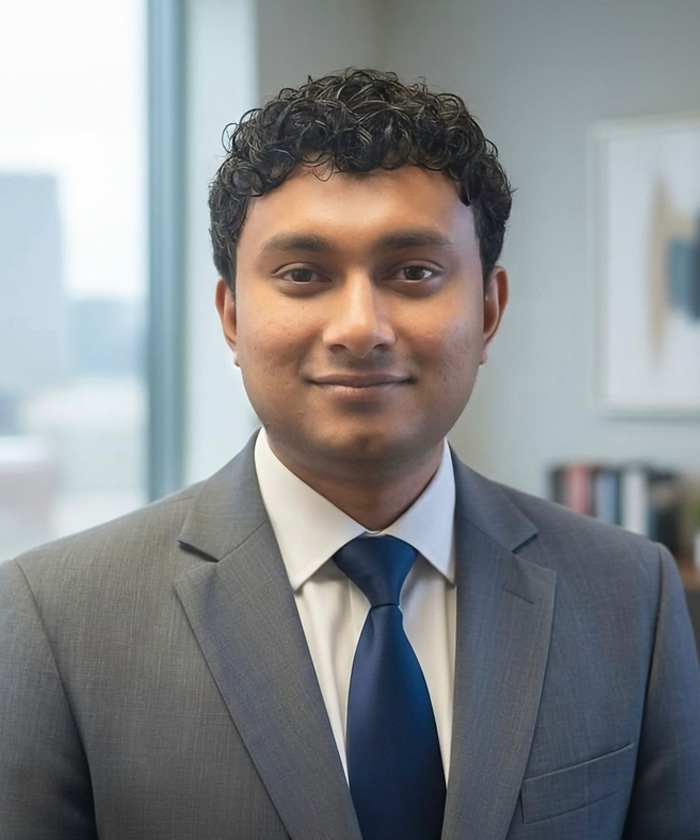

About Me
I am an Assistant Professor of Computer Science at Hampton University, Virginia, USA. Previously, I served as a Postdoctoral Researcher and the Lab Leader under Dr. Myunghee Kim in the Rehabilitation Robotics Laboratory at the University of Illinois Chicago, USA. I earned my PhD in Computer Science at DePaul University, Chicago, USA, under the supervision of Dr. Iyad Kanj and Dr. Isuru Godage.
Hampton University Faculty Profile
LinkedIn Profile
Google Scholar Profile
Education
- Postdoctoral Researcher - Rehabilitation Robotics, University of Illinois Chicago, Chicago, USA (2024-2025)
- PhD - Computer Science, DePaul University, Chicago, USA (2019-2024)
- MSc - Electronics and Automation, University of Moratuwa, Moratuwa, Sri Lanka (2014-2017)
- MSc - Renewable Energy, University of Agder, Grimstad, Norway (2012-2014)
- BSc. Eng | First Class Honors - Mechanical and Manufacturing Engineering, University of Ruhuna, Galle, Sri Lanka (2004-2008)
Research Interests
I work in robotics, mechatronics, and artificial intelligence, focusing on applications across multidisciplinary domains.
Recent News
Recent research, publications, teaching activities, and other updates will appear here.